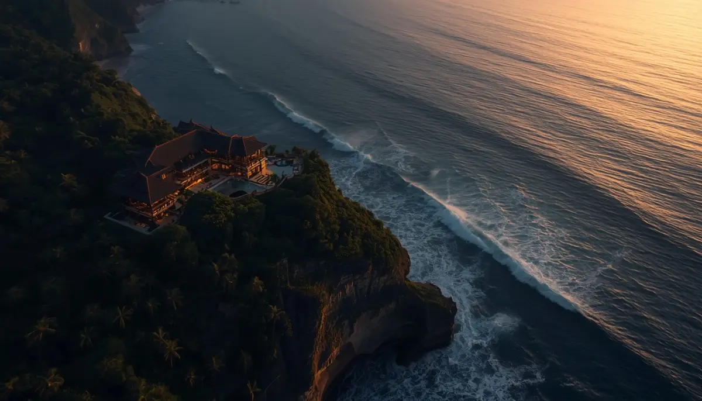
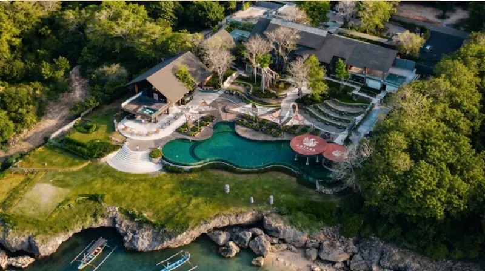
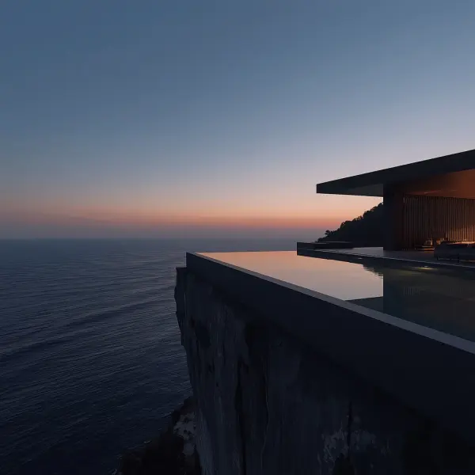
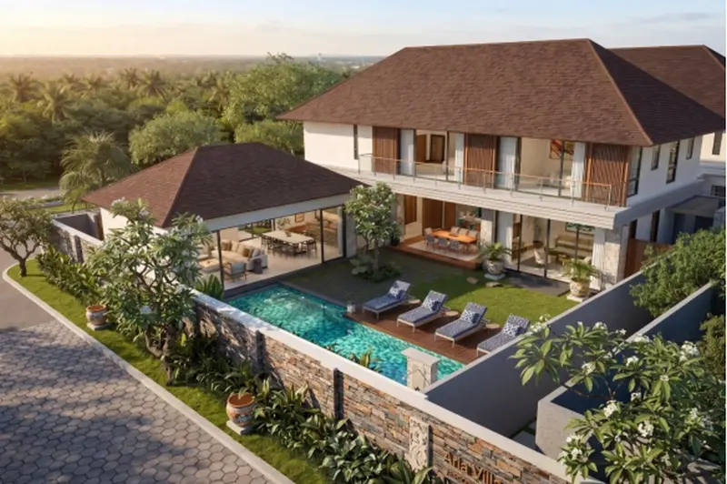
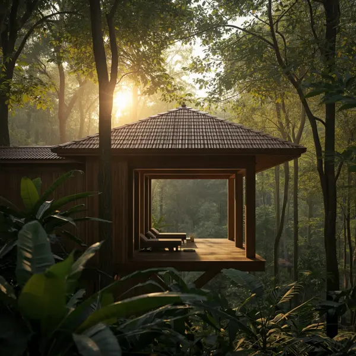
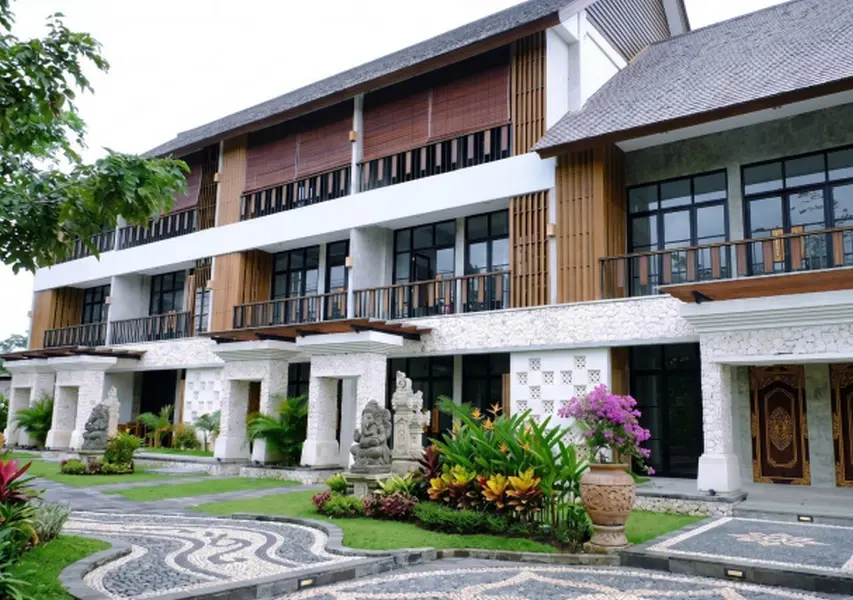
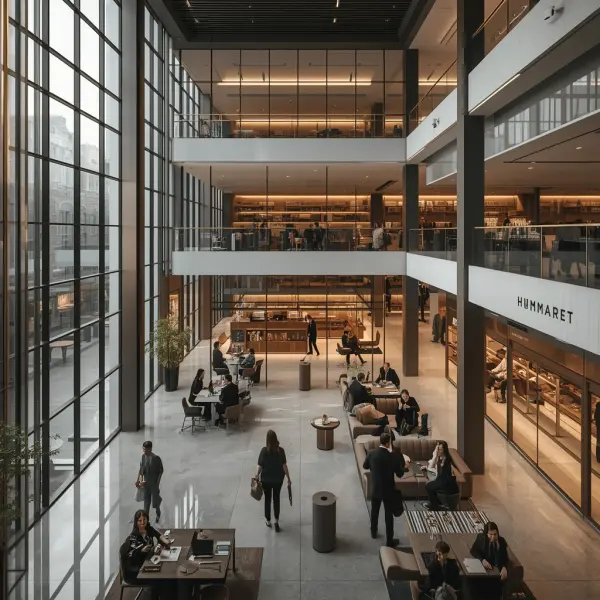
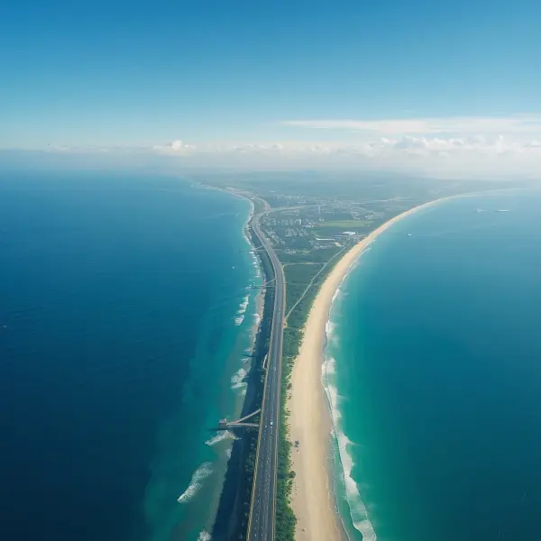

Jangan pertaruhkan modal miliaran Anda pada proyek developer tanpa rekam jejak yang jelas. Kami hadirkan ekosistem real estate dan resor kelas dunia yang legal, terbangun, dan terintegrasi penuh.
Berada di lokasi ultra-premium, hanya 15 menit dari Bandara Internasional Ngurah Rai. Waktu Anda terlalu berharga untuk investasi yang tidak pasti.
🔒 KONSULTASI VIP VIA WHATSAPP SEKARANGSaat ini, banyak investor lokal maupun asing yang terjebak oleh janji manis brosur proyek yang berakhir mangkrak. Tren 'gagal bangun' dan sengketa legalitas di Bali sedang menjadi sorotan tajam. Anda butuh lebih dari sekadar gambar desain 3D yang cantik di marketplace.
Investasi cerdas menuntut kepastian hukum, reputasi developer yang solid, dan tata kelola kawasan yang saling terhubung. Di sinilah kami hadir untuk memulihkan standar keamanan dan eksklusivitas investasi Anda. Kami tidak hanya menjual bangunan, kami membangun ekosistem bernilai tinggi.


Berdiri megah di atas lahan seluas ±70.000 SQM, Locca dirancang khusus untuk kalangan elit global. Konsep arsitektur tebing (cliff-front) ini memastikan privasi Anda tidak akan pernah terganggu oleh hiruk-pikuk pariwisata massal.
Setiap inci desainnya adalah mahakarya yang menyeimbangkan kemewahan modern dengan keindahan alam pesisir murni. Jangan tunggu sampai slot investasi eksklusif ini jatuh ke tangan investor lain. Ketersediaan sangat dibatasi.
📑 MINTA EXECUTIVE BRIEF LOCCA DI SINI

Menempati area prestisius seluas ±23.000 SQM, Natadesa menjawab tingginya permintaan kalangan ekspatriat akan hunian tropis yang berfokus pada kesehatan (wellness). Kami memadukan standar kemewahan tertinggi dengan prinsip ekologis yang berkelanjutan.
Berada tepat di tengah kawasan residensial yang sudah mapan dan hidup, nilai kapitalisasi aset ini diproyeksikan akan terus meroket. Kunci portofolio Anda sekarang sebelum harga tanah di South Kuta kembali melambung tinggi.
🌿 AMANKAN UNIT NATADESA VIA WHATSAPP
Nilai sebuah properti mewah tidak bisa berdiri sendiri tanpa infrastruktur pendukung yang mumpuni. Kami membangun ekosistem seluas ±2.177 SQM (NLA) yang dirancang khusus untuk komunitas profesional global.
Area ini berisi kurasi ritel premium, ruang kantor fleksibel, dan pusat teknologi modern. Fasilitas ini menjamin para penghuni maupun tamu resor Anda tidak perlu pergi jauh untuk menikmati gaya hidup dan kebutuhan bisnis kelas dunia.

Hanya berjarak 15 menit dari Bandara Internasional Ngurah Rai, ekosistem South Kuta menjamin aksesibilitas tanpa hambatan bagi Anda maupun tamu eksekutif global.
Kemudahan akses langsung menuju kawasan pariwisata utama dan infrastruktur vital ini menjadi jaminan mutlak bahwa nilai tanah dan properti Anda di sini akan terus terapresiasi secara eksponensial.
